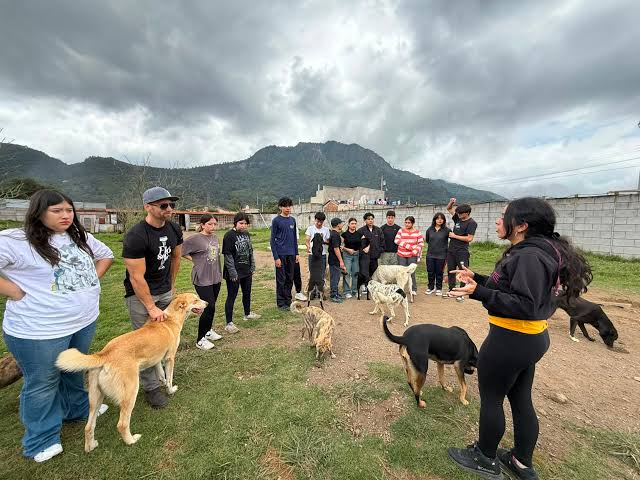

Sobre nosotros
Huellitas nació en 2021, cuando un grupo de vecinos empezó a rescatar perros abandonados en las plazas del barrio. Lo que comenzó con tres perritos en un patio hoy es una ONG con voluntarios, veterinarios y familias que se suman cada año.
Creemos que ningún perro debería vivir en la calle. Por eso rescatamos, curamos y acompañamos a cada uno hasta que encuentra un hogar lleno de cariño.

Lo que nos mueve
-
Nuestra misión
Rescatar perros en situación de calle, brindarles atención veterinaria y encontrarles una familia definitiva.
-
Nuestra visión
Una ciudad donde cada perro tenga un hogar y la adopción responsable sea lo natural.
-
Nuestros valores
Amor, compromiso, trabajo en equipo y respeto por cada vida, sin importar su edad o su historia.
- +120 perros adoptados
- +60 voluntarios
- +1500 atenciones gratuitas
- 7 años de trabajo
¿Querés ser parte de Huellitas?
Podés adoptar, donar, ser voluntario o ser hogar de tránsito. Cada gesto cambia la vida de un perro.
Contactanos!